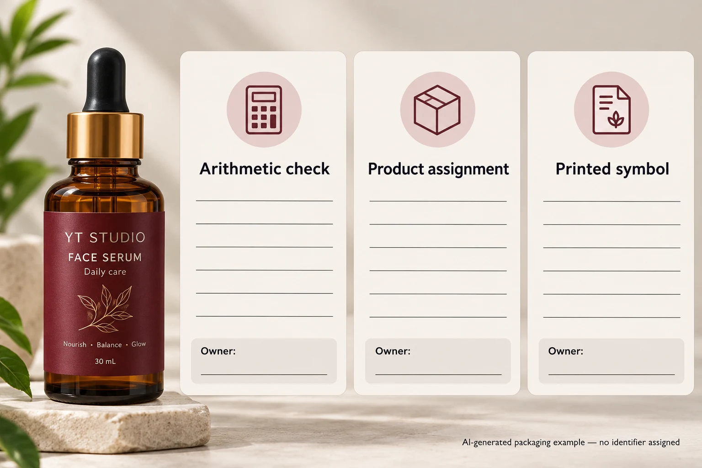

A brand supplies one identifier in its product list and another in the barcode artwork. Both strings look plausible. Before approving the label, procurement needs the data owner to identify the authorised value. A check-digit calculation can reveal an arithmetic mismatch, but it cannot decide which product owns the number.
Keep three checks separate: the supplied identifier's arithmetic, its authorised assignment to this product, and the eventual printed symbol's quality. Use the check digit to investigate the first. If it disagrees, return the discrepancy to the data owner rather than changing the last digit in production artwork on your own.
Start with the supplied value and its meaning
Identify the internal SKU, product variant, packaging level, intended identifier type and authoritative source. Obtain the full supplied string as text. A spreadsheet cell that has lost a leading zero or rounded a digit is not a reliable basis for a check calculation.
Ask whether the field is actually a GTIN rather than an internal item code. An internal six-character reference does not become a GTIN because it appears beside a barcode. Likewise, do not strip or add digits merely to make a calculator accept an unexplained value. The owner's format and intended use must be established first.
The GTIN change-review guide addresses whether an item change requires a different identifier. This guide deals with the narrower integrity check on the value that has already been supplied for artwork.
Use the official calculator or a documented arithmetic check
GS1 provides a check-digit calculator with fields for specified identification-key types. Follow the instructions for the relevant type, including whether the input excludes the check digit. Keep the input and output with the record being reviewed; a screenshot of a calculator with no product reference is difficult to reconcile later.
For the GS1 modulo-10 calculation described by GS1 UK, exclude the supplied final check digit and work from the rightmost remaining digit. Multiply that digit by three, the next by one, and continue alternating three and one toward the left. Add the weighted values. The calculated check digit is the amount from zero to nine that makes the sum a multiple of ten. If the sum is already a multiple of ten, the check digit is zero.
The direction matters. Do not start with a fixed weight at the left without accounting for the length. When teaching or checking a method, keep the positions visible so the reviewer can see which digits received each weight.
A worked arithmetic example
The following string is a fictional calculation exercise, not an allocated GTIN and not data to put on a real product. For the twelve-digit base 123456789012, apply the weights from the right:
| Digits in the base, left to right | 1 | 2 | 3 | 4 | 5 | 6 | 7 | 8 | 9 | 0 | 1 | 2 |
|---|---|---|---|---|---|---|---|---|---|---|---|---|
| Weight for this twelve-digit base | 1 | 3 | 1 | 3 | 1 | 3 | 1 | 3 | 1 | 3 | 1 | 3 |
| Product | 1 | 6 | 3 | 12 | 5 | 18 | 7 | 24 | 9 | 0 | 1 | 6 |

The weighted sum is 92, so the arithmetic check digit is 8. That demonstrates the calculation only. It says nothing about whether the resulting number is licensed, assigned, entered in a trading partner's product data, or appropriate to a cosmetic pack.
In a real job, compare the calculated digit with the supplied final digit while retaining the complete original source. If they differ, record both values and stop the affected data release. Do not repair the artwork by assuming the base digits are correct: the error could be elsewhere in the string.
Make the exception useful to the data owner
| Record field | What to retain | What the owner must resolve |
|---|---|---|
| Product | SKU, variant and packaging level | Which item the identifier is meant to represent |
| Source | Authoritative file or system reference, revision and exact supplied string | Whether the source is current and intact |
| Check | Identifier type, calculator or method and calculated digit | Whether arithmetic matches the supplied value |
| Difference | Exact source/artwork strings and affected file | Where the discrepancy entered the workflow |
| Authorised answer | Confirmed full identifier and owner approval | Which complete value replaces the pending one |
| Output | Corrected artwork reference and recheck | Whether the authorised value reached the label |
First check that the source and artwork refer to the same product and revision. Next perform the integrity check. If there is a discrepancy, ask the data owner to confirm the complete authorised identifier. Have the artwork operator use that confirmed value and review the replacement file. Correct the source or transfer rule too if it produced the error.
Transport can also alter literal values. Ask the data owner and operator to inspect the source and receiving values directly; a changed display format cannot recover digits that have already been lost.
A matching digit still leaves two decisions open
One hypothetical project has a check-digit mismatch caused by a source-transcription error. Restoring the owner-confirmed full string and reviewing the resulting artwork can resolve that data issue. Another project has a mathematically consistent identifier copied from the wrong variant. The arithmetic will not expose that ownership mistake.
Neither situation establishes print quality. A correct identifier still needs suitable symbol artwork, position and finished-pack evidence for the receiving requirement. Use the barcode approval checklist for that separate review.
Keep the scope modest: this check is a useful early filter, not proof of product authenticity, lawful assignment, retail acceptance or a complete barcode-quality result. Ask the responsible identifier owner to resolve those questions through the applicable GS1 and trading-partner routes.
For custom cosmetic labels, provide the container, dimensions, quantities by version and approved artwork. State which identifier fields have owner approval and which remain pending. Use the inquiry form to prepare a message; send files separately by email or WhatsApp. The form does not upload attachments. An identified unresolved field is safer to manage than an unapproved correction hidden inside a final PDF.
Sources: GS1 UK, What is a check digit? explains the modulo-10 calculation; GS1 US calculator guidance explains the tool's role and input requirements. The arithmetic example above is independently calculated and explicitly fictional.